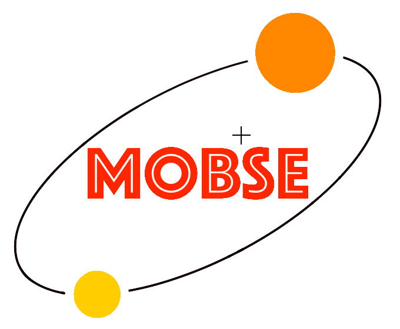

MOBSE
Massive Objetcs in Binary Stellar Evolution

MOBSE (Giacobbo et al. preparation) is the new population-synthesis code I have developed during my Master's Thesis and my first-year of PhD research.
It is an upgraded version of BSE (acronym for Binary Stellar Evolution), one of the most popular
population-synthesis codes (Hurley et al. 2000,2002).
The major upgrades implemented in MOBSE includes: 1) the up-to-date equations for metal-dependent stellar winds (based on Belczynski et al. 2010 and
on Chen et al. 2015), 2) new models for core-collapse SNe (Fryer et al. 2012), 3) the prescriptions for the PI (Pair Instability) and PPI (Pulsation
Pair Instability) described in Spera & Mapelli 2017 and 4) new formualas to compute the core radii (Hout et al. 2004). Moreover, MOBSE includes the
dependence of stellar winds on the Eddington factor, adopting the prescription by Chen et al. 2015.